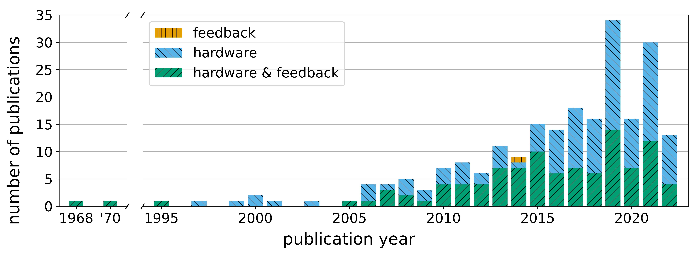

Sitting Posture Recognition and Feedback: A Literature Review


Authors. Christian Krauter, Katrin Angerbauer, Aimée Sousa Calepso, Alexander Achberger, Sven Mayer, Michael Sedlmair
Venue. CHI (2024)
Abstract. Extensive sitting is unhealthy; thus, countermeasures are needed to react to the ongoing trend toward more prolonged sitting. A variety of studies and guidelines have long addressed the question of how we can improve our sitting habits. Nevertheless, sitting time is still increasing. Here, smart devices can provide a general overview of sitting habits for more nuanced feedback on the user's sitting posture. Based on a literature review (N=223), including publications from engineering, computer science, medical sciences, electronics, and more, our work guides developers of posture systems. There is a large variety of approaches, with pressure-sensing hardware and visual feedback being the most prominent. We found factors like environment, cost, privacy concerns, portability, and accuracy important for deciding hardware and feedback types. Further, one should consider the user's capabilities, preferences, and tasks. Regarding user studies for sitting posture feedback, there is a need for better comparability and for investigating long-term effects.